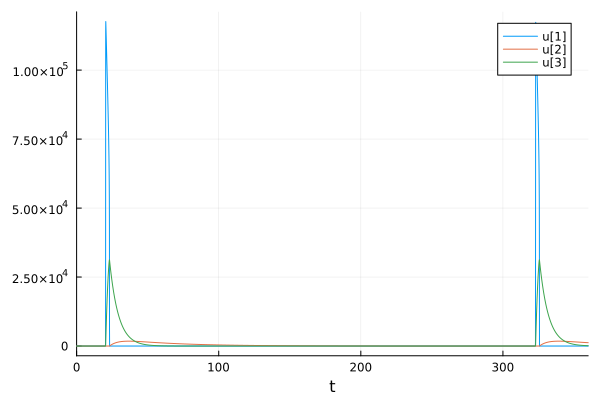
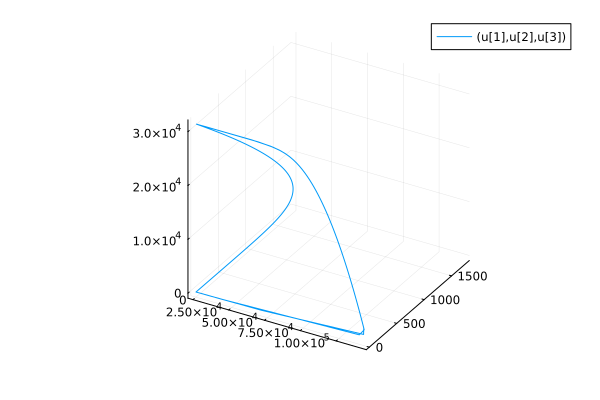
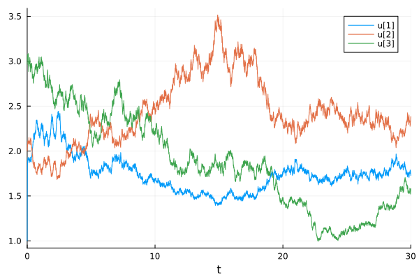
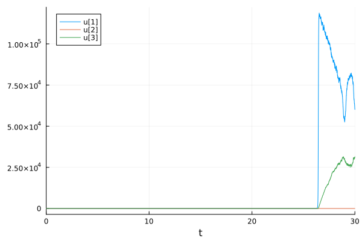

Investigating Sources of Randomness and Uncertainty in a Stiff Biological System (B)
using DifferentialEquations
using OrdinaryDiffEqRosenbrock: Rodas5
using StochasticDiffEqHighOrder: SOSRI
using StochasticDiffEqImplicit: ImplicitRKMil
using Sundials
using BenchmarkTools
using PlotsPart 1: Simulating the Oregonator ODE model
using DifferentialEquations, Plots
function orego(du,u,p,t)
s,q,w = p
y1,y2,y3 = u
du[1] = s*(y2+y1*(1-q*y1-y2))
du[2] = (y3-(1+y1)*y2)/s
du[3] = w*(y1-y3)
end
p = [77.27,8.375e-6,0.161]
prob = ODEProblem(orego,[1.0,2.0,3.0],(0.0,360.0),p)
sol = solve(prob)
plot(sol)
plot(sol,idxs=(1,2,3))
Part 2: Investigating Stiffness
using BenchmarkTools
prob = ODEProblem(orego,[1.0,2.0,3.0],(0.0,50.0),p)
@btime sol = solve(prob,Tsit5()); 2.288 s (15701628 allocations: 698.76 MiB)@btime sol = solve(prob,Rodas5()); 507.667 μs (1244 allocations: 60.67 KiB)(Optional) Part 3: Specifying Analytical Jacobians (I)
(Optional) Part 4: Automatic Symbolicification and Analytical Jacobian Calculations
Part 5: Adding stochasticity with stochastic differential equations
function orego(du,u,p,t)
s,q,w = p
y1,y2,y3 = u
du[1] = s*(y2+y1*(1-q*y1-y2))
du[2] = (y3-(1+y1)*y2)/s
du[3] = w*(y1-y3)
end
function g(du,u,p,t)
du[1] = 0.1u[1]
du[2] = 0.1u[2]
du[3] = 0.1u[3]
end
p = [77.27,8.375e-6,0.161]
prob = SDEProblem(orego,g,[1.0,2.0,3.0],(0.0,30.0),p)
sol = solve(prob,SOSRI())
plot(sol)
sol = solve(prob,ImplicitRKMil()); plot(sol)
sol = solve(prob,ImplicitRKMil()); plot(sol)
Part 6: Gillespie jump models of discrete stochasticity
Part 7: Probabilistic Programming / Bayesian Parameter Estimation with DiffEqBayes.jl + Turing.jl (I)
The data was generated with:
function orego(du,u,p,t)
s,q,w = p
y1,y2,y3 = u
du[1] = s*(y2+y1*(1-q*y1-y2))
du[2] = (y3-(1+y1)*y2)/s
du[3] = w*(y1-y3)
end
p = [60.0,1e-5,0.2]
prob = ODEProblem(orego,[1.0,2.0,3.0],(0.0,30.0),p)
sol = solve(prob,Rodas5(),abstol=1/10^14,reltol=1/10^14)
plot(sol)